這份說明書會一步一步告訴您怎麼用這個程式。圖上的橘色框框和數字，對照下面的說明 ①②③ 慢慢做就可以了，不用急。
用程式的時候，隨時按右上角的「？ 使用說明」（或鍵盤上的 F1），就會打開這份說明，而且會直接翻到您正在用的那一頁。
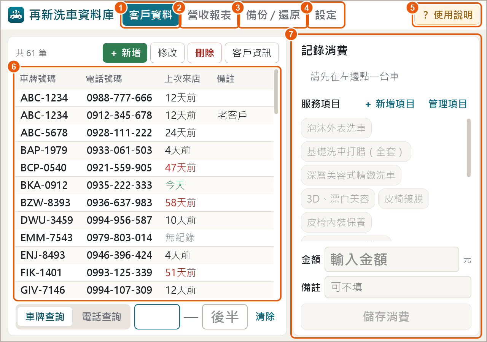
最上面一排是按鈕，點哪一個就換到哪一頁：
① 客戶資料：查客人、看電話、記錄消費，平常幾乎都在這一頁。
② 營收報表：看今天、這週、這個月、今年收了多少錢。
③ 備份 / 還原：把資料另外存一份到隨身碟，電腦壞了也不怕。
④ 設定：字太小可以在這裡調大，也可以整理服務項目。
⑤ 使用說明：就是您現在看的這份說明。
「客戶資料」這一頁分成左右兩邊：
⑥ 左邊是客人的清單：車牌、電話、上次來店是幾天前。下面是查詢的地方。
⑦ 右邊是記錄消費：在左邊點一台車，就可以在這裡記這次洗了什麼、收多少錢。
|
小提醒 「上次來店」變成紅色，代表這位客人已經 30 天以上沒來了，可以打個電話問候一下；綠色的「今天」是今天來過的。 主畫面不會顯示金額，客人站在旁邊看也沒關係；要看錢的時候再到「營收報表」或「客戶資訊」。 |
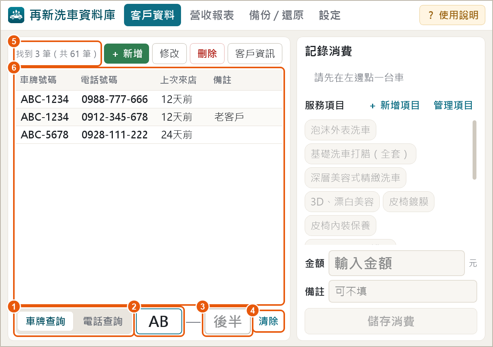
① 先確定選的是「車牌查詢」（平常就是它）。
② 前半：打車牌前面那一段，例如 ABC-1234 就打「ABC」。打小寫也沒關係，會自動變大寫。
③ 後半：打後面那一段「1234」。前半打完按 Enter，游標會自己跳過來。
不用整個打完，打一兩個字，清單就會馬上只留下符合的車。
④ 清除：把打的字清掉，重新查。按鍵盤上的 ESC 也一樣。
⑤ 這裡會寫找到幾台。
⑥ 找到的車會列在清單裡。只找到一台的時候，程式會自動幫您選好，右邊就可以直接記錄消費。
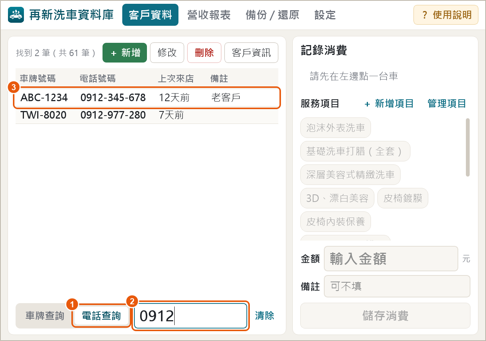
① 按「電話查詢」。
② 打電話號碼，只記得前面幾碼也可以，例如「0912」。
③ 號碼對得上的車都會列出來。
| 小提醒 一台車可以有好幾支電話（例如先生、太太都有留）。同一台車會出現好幾行，最上面那支是最新留的。 |
新客人第一次來，按左邊清單上面的「＋ 新增」，會跳出這個視窗：
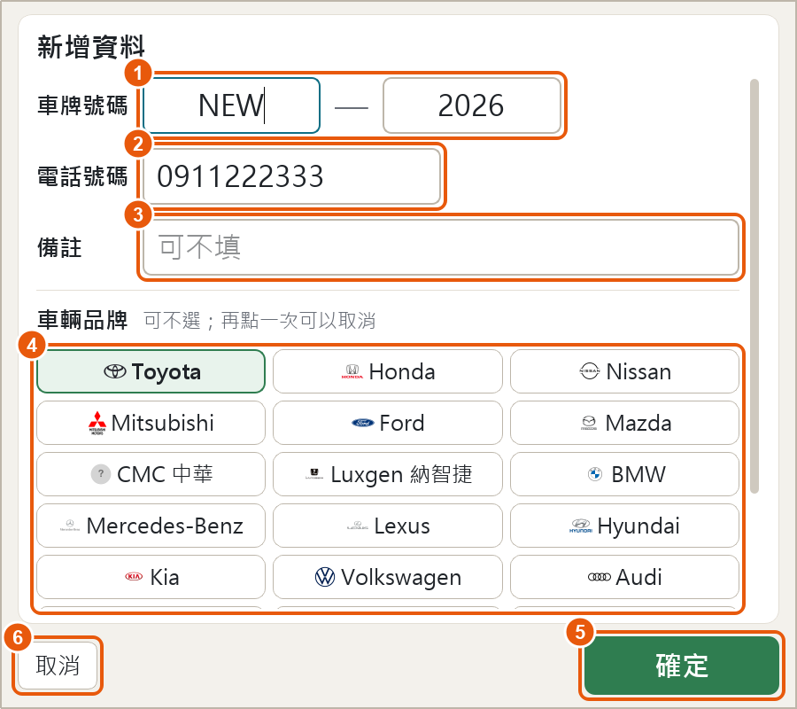
① 車牌號碼：前半、後半分開打，例如「ABC」和「1234」。
② 電話號碼：只打數字就好，例如 0912345678。不知道也可以先不填。
③ 備註：可以不填。例如「公司車」、「要打蠟」。
④ 車輛品牌：點一下車子的牌子，可以不選。選錯了再點一次就取消。
⑤ 打好按「確定」。上面會出現「✓ 已新增」，視窗不會關掉，可以接著打下一台。
⑥ 都打完了按「取消」（存完以後會變成「關閉」）離開。
| 鍵盤小撇步 每一格打完按 Enter 就會跳到下一格，最後一格按 Enter 就是存檔。打錯想全部重來，按 ESC 會清空。 |
| 同一台車要加第二支電話？ 一樣用「＋ 新增」，打同樣的車牌和新的電話。程式會問「這台車已經有資料，要再加一個電話號碼嗎？」按「加這個號碼」就好，舊的號碼會留著。按「不要」的話，打的字還在，可以改一改再存。 |
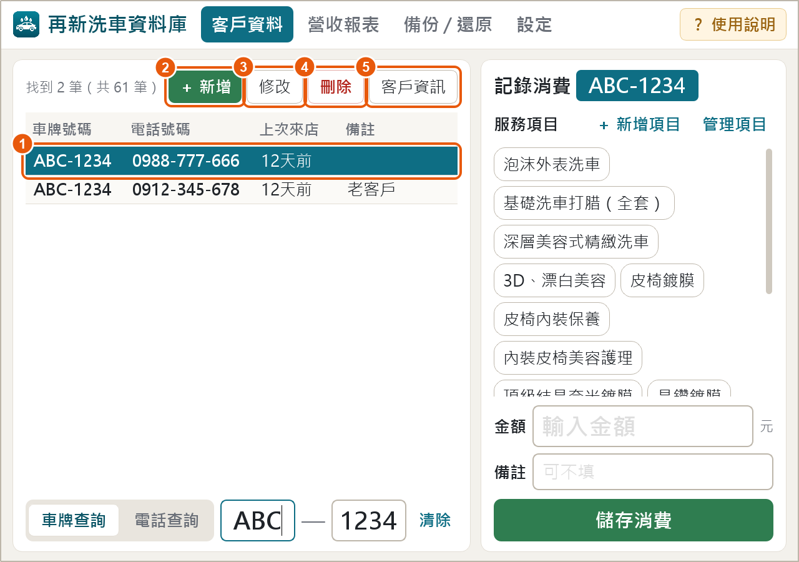
① 先在清單裡點一下那台車，那一行會變成藍綠色，代表選到了。
② ＋ 新增：加新的客人（見第三章）。
③ 修改：改這一行的車牌、電話、備註或品牌。
④ 刪除：刪掉這一行。
⑤ 客戶資訊：看這台車總共花了多少、來過幾次（見第六章）。在清單上那一行點兩下也會打開。
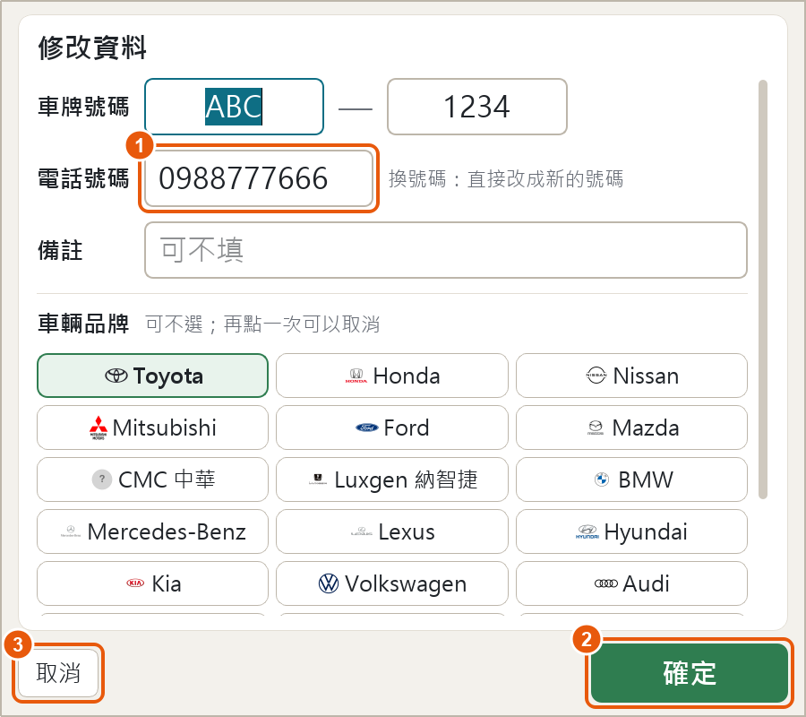
① 選好那一行按「修改」，直接把電話改成新的號碼。
② 按「確定」就改好了。
③ 不改了按「取消」或 ESC，什麼都不會動。
「刪除」只會刪掉選到的那一個電話號碼。如果這台車還有別的電話，其他號碼都會留著。這台車的消費紀錄也會一直保留，營收報表的數字不會變。程式會先問您一次，按「確定刪除」才會刪。
先在左邊找到那台車、點一下（見第二章），右邊就可以記錄：
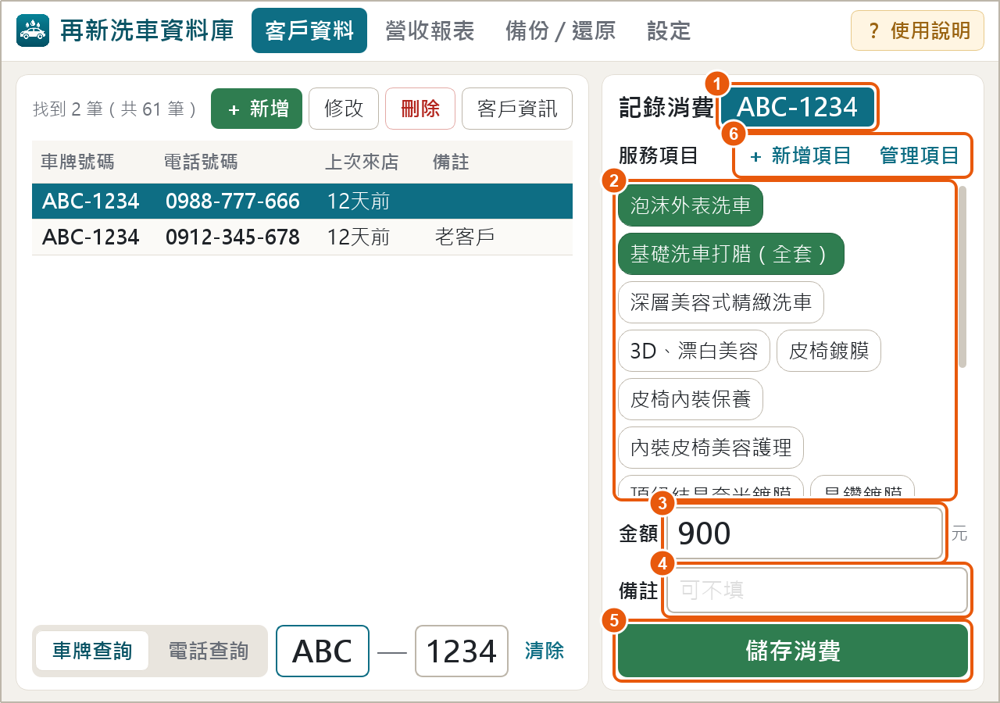
① 這裡會顯示現在選到的車牌。記錄之前看一下，確定是這台車。
② 服務項目：這次做了哪些，就點一下，變成綠色就是選到了。可以選好幾個，點錯再點一次就取消。
③ 金額：打這次收的錢，只要打數字，例如 900。
④ 備註：可以不填。例如「下次要打蠟」。
⑤ 按「儲存消費」。左上角會出現「✓ ABC-1234 已記錄」，這樣就好了。
⑥ 「＋ 新增項目」、「管理項目」：服務項目可以自己加、自己改（見第七章）。
| 鍵盤小撇步 金額打好按 Enter 會跳到備註，備註再按 Enter 就存好了。 |
|
小提醒 還沒選車的時候，右邊是灰色的，按不下去，這是正常的。 金額打錯、已經存了：到「客戶資訊」把那一筆刪掉，再重新記錄一次（見第六章）。 |
在清單上點兩下那台車，或選好以後按「客戶資訊」：
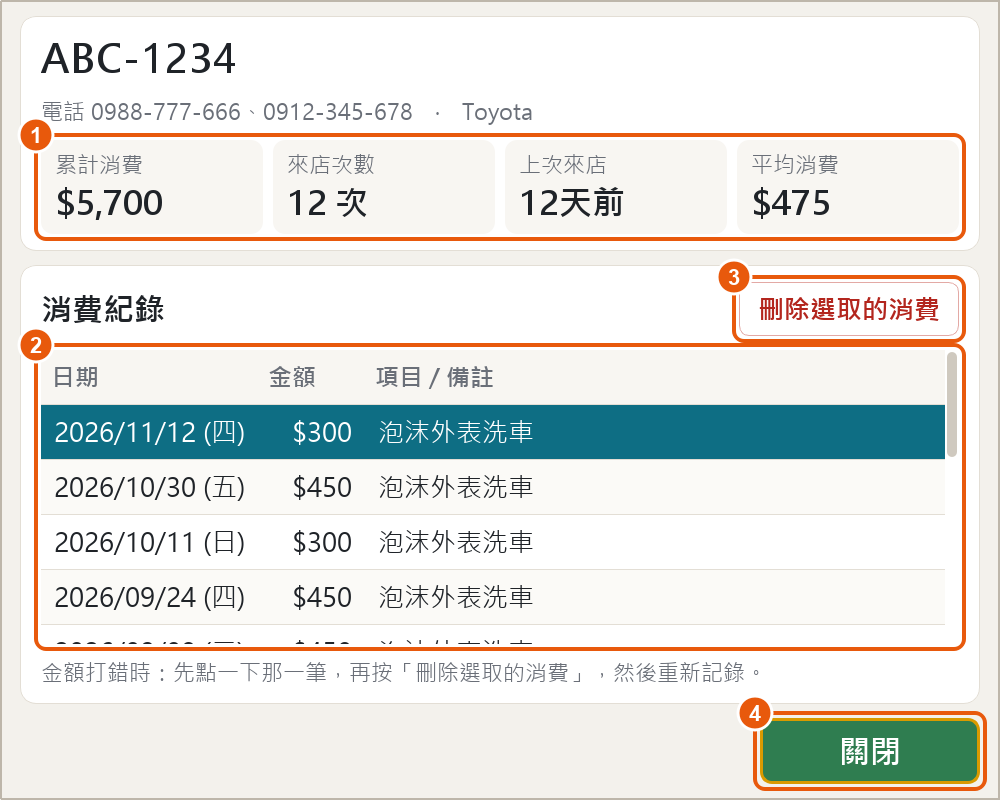
① 這台車的累計消費（總共花了多少）、來店次數、上次來店、平均消費。最上面也會列出這台車所有的電話。
② 消費紀錄：每一次來的日期、金額、做了什麼，最新的在最上面。
③ 刪除選取的消費：金額打錯的時候，先點一下那一筆，再按這個刪掉，然後回主畫面重新記錄。程式會先問您一次。
④ 看完按「關閉」。
記錄消費時點的那些服務項目（泡沫外表洗車、基礎洗車打腊…），可以照您店裡的價目表自己改。改好以後會一直留著。
最快的方法：在記錄消費那邊，在某個項目上按滑鼠右鍵，就可以直接改名或刪除。要一次整理，就按「管理項目」（或到「設定」頁）：
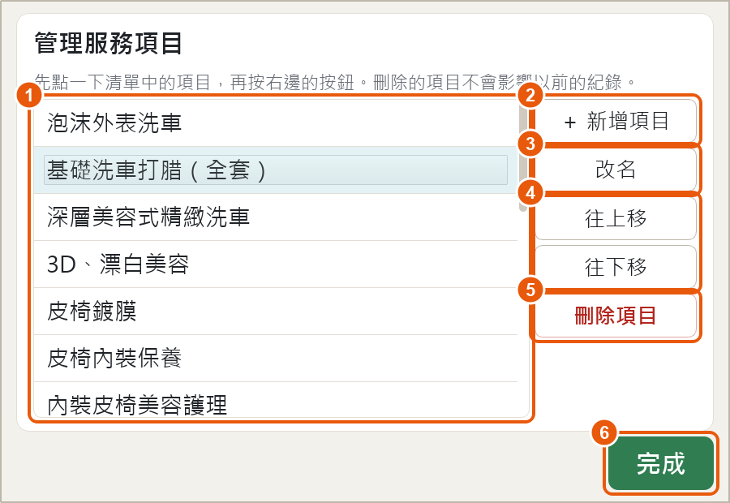
① 先在清單裡點一下要處理的項目。
② ＋ 新增項目：加一個新的，例如「冷氣除臭」。
③ 改名：把名字改掉。
④ 往上移 / 往下移：常用的排前面，記錄消費那邊的順序會跟著變。
⑤ 刪除項目：不再做的可以刪掉。放心，以前的消費紀錄上寫的不會不見。
⑥ 弄好了按「完成」。
| 小提醒 服務項目只記名字，不記價錢，每次的金額照實際收的打就好。刪掉的項目之後又要用，再「新增」一次一樣的名字就回來了。 |
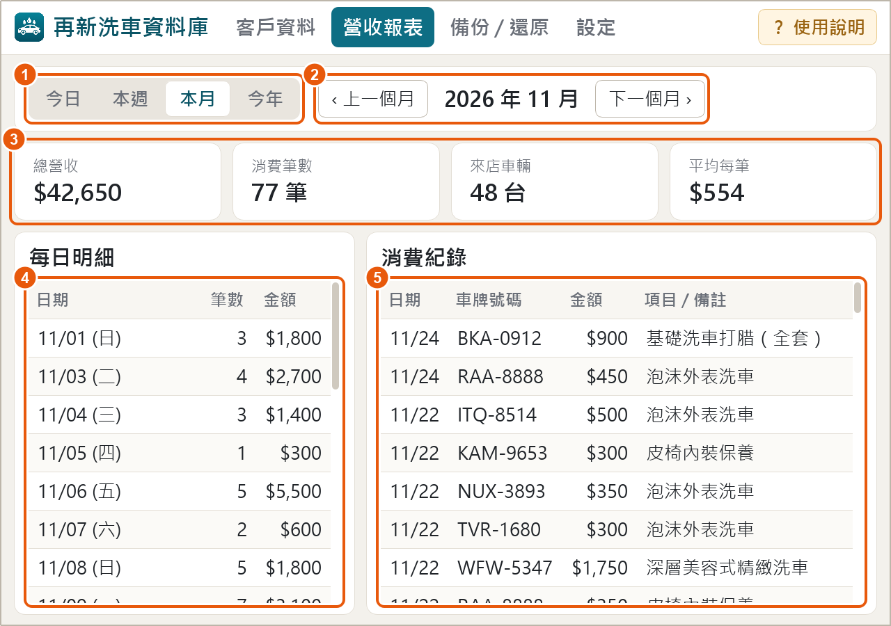
① 今日 / 本週 / 本月 / 今年：選您要看哪一段時間。每週是算星期一到星期日。
② 上一個月 / 下一個月（看今日的時候是前一天 / 後一天）：往前、往後翻。中間寫的就是現在看的時間。
③ 這段時間的總營收、消費筆數、來店車輛（有幾台不一樣的車）、平均每筆收多少。
④ 每日明細：每天幾筆、收了多少（看「今年」的時候會變成每個月）。
⑤ 消費紀錄：這段時間每一筆的日期、車牌、金額和項目，最新的在最上面。
① 翻到別的時間時，旁邊會出現「回到本月」（或回到今天、本週、今年），按一下就回來了。
電腦壞掉、中毒或被偷，裡面的客人電話就會跟著不見。備份就是把全部資料另外存一份，放在隨身碟或雲端硬碟。建議每個禮拜備份一次，例如每週六收店前。
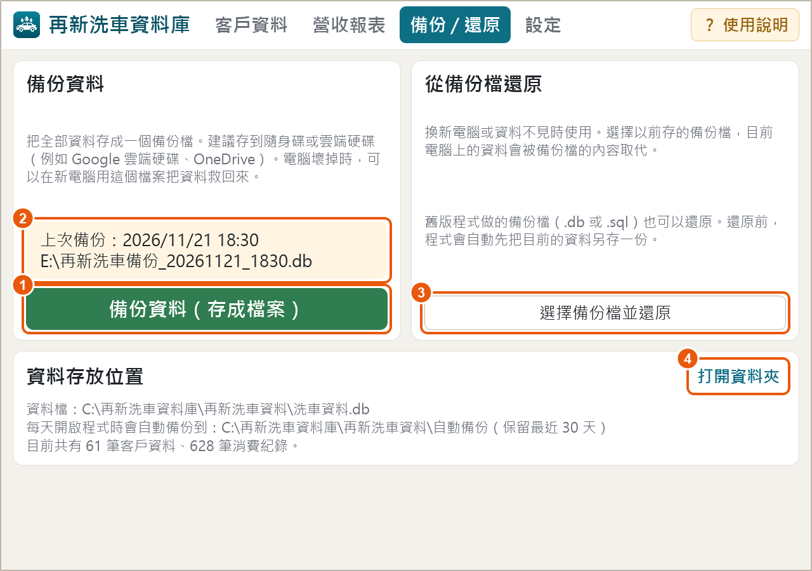
1. 先插上隨身碟。
2. 按 ①「備份資料（存成檔案）」。
3. 會跳出存檔的視窗。在左邊點您的隨身碟（通常叫「USB 磁碟機」，或是 E:、F:），檔名不用改，按「存檔」。
4. 看到「備份成功！」就完成了。
② 這裡會寫上次什麼時候備份、存在哪裡。很久沒備份了，就該做一次了。
| 自動備份 程式每天打開的時候，會自動在電腦裡備份一份，保留最近 30 天。不過這份跟程式在同一台電腦裡，電腦壞了就一起壞，所以隨身碟的備份還是要做。 |
1. 在新電腦放好程式，打開它。
2. 按 ③「選擇備份檔並還原」，找到隨身碟裡的備份檔（名字像「再新洗車備份_20261122_1830.db」），按「開啟」。舊版程式做的備份檔（.db 或 .sql）也可以用。
3. 程式會告訴您：備份檔裡有幾筆客戶、幾筆消費，電腦上現在有幾筆。確定沒錯，再按「確定還原」。
|
注意 還原會用備份檔取代電腦上現在的資料。 不過不用太擔心：還原之前，程式會自動先把現在的資料另存一份（在「自動備份」資料夾裡，檔名是「還原前備份_…」），萬一選錯檔案還救得回來。 |
④ 打開資料夾：看資料實際存在電腦的哪裡。
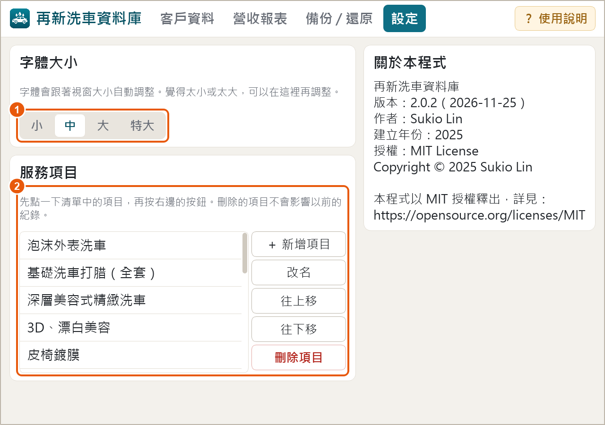
① 字體大小：覺得字太小，就按「大」或「特大」，馬上就會變，下次打開也會記得。字也會跟著視窗大小自動調整，所以視窗開到最大最好看。
② 服務項目：跟「管理項目」一樣，可以新增、改名、排順序、刪除（見第七章）。
右邊的「關於本程式」寫著版本。打電話問問題的時候，可以先告訴對方是哪一版。
到「設定」，字體大小選「大」或「特大」。把視窗放到最大，字也會跟著變大。
先按「清除」（或 ESC）把之前打的字清掉，再查一次。如果還是找不到，可能當初車牌打成別的，試試只打後半的數字，或改用電話查。
到「客戶資訊」，點一下打錯的那一筆，按「刪除選取的消費」，再回主畫面重新記錄一次。
還沒選車。先在左邊清單點一下那台車就可以了。
代表程式已經開了，只是被別的視窗蓋住。看螢幕最下面的工作列，點一下再新洗車資料庫的圖示，它就會跑出來。
最簡單的方法：把放程式的整個資料夾（程式加上「再新洗車資料」資料夾）一起複製到新電腦。
或是：舊電腦先備份到隨身碟，新電腦放好程式以後，用「還原」把資料放回來（見第九章）。
只要用新的「再新洗車資料庫.exe」蓋掉舊的就好。旁邊的「再新洗車資料」資料夾不要動，資料都還在。以前舊版的資料，新版打開時也會自動接過來。
照視窗上寫的，把「錯誤紀錄.log」這個檔案交給維護人員。您的資料不會因為這樣不見。
| 還有其他問題，請找幫您安裝程式的人。 回到目錄 |